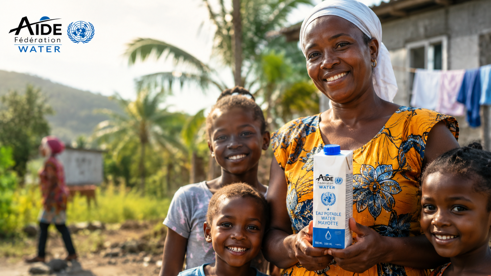
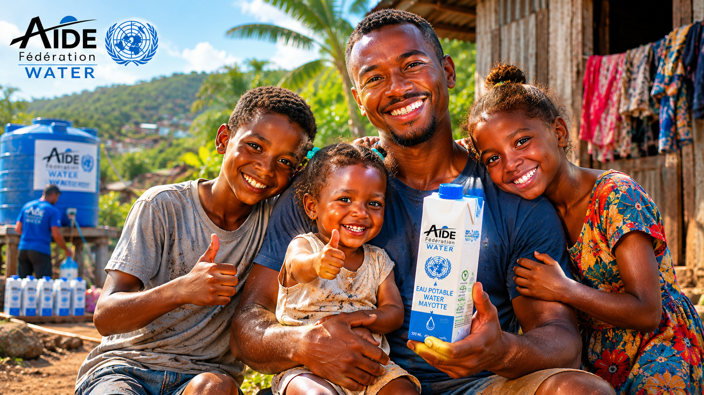
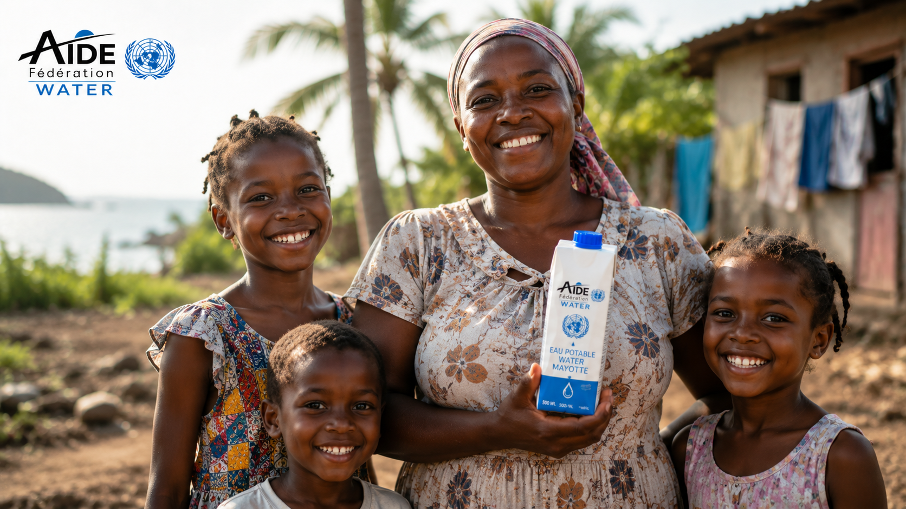
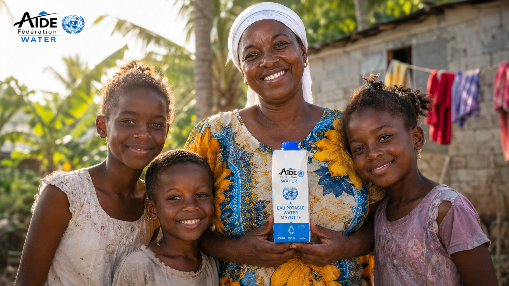
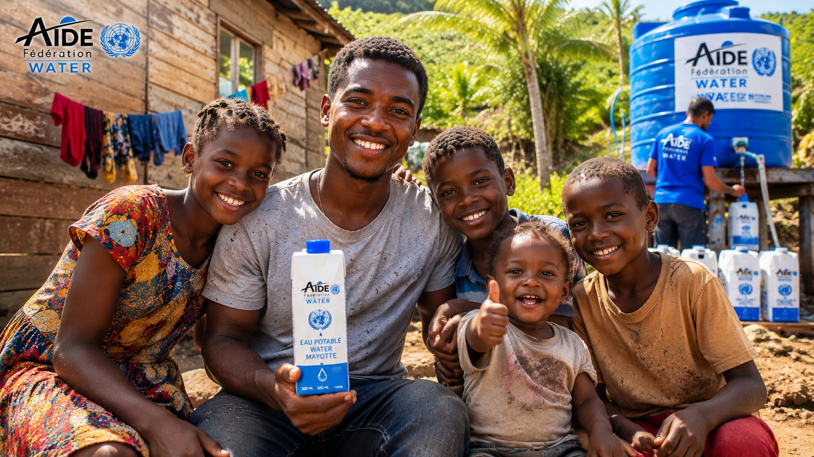
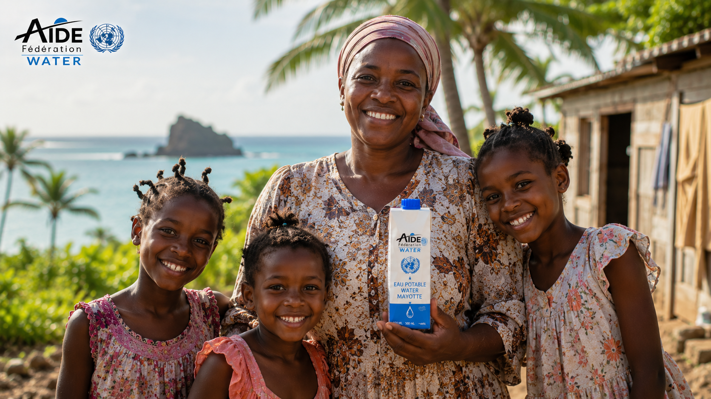
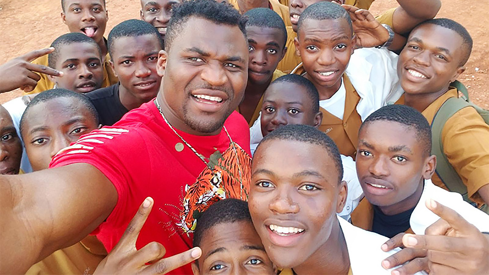

Un programme humanitaire qui part d'un île française
pour atteindre le monde entier.
AIDE Fédération lance le premier programme d'accès à l'eau potable zéro plastique à Mayotte. Le modèle est conçu dès le premier jour pour traverser les frontières — et changer des millions de vies.

Distribution directe — conditionnement carton AIDE Fédération Water

Point de distribution solidaire — carton recyclable, circuit court

Familles bénéficiaires — lagon de Mayotte, Océan Indien
101e département français, Mayotte réunit toutes les conditions pour tester, prouver et documenter un modèle de distribution d'eau potable zéro plastique. Une crise réelle, documentée, dans un territoire de droit français — ce qui ouvre l'accès aux financements européens les plus solides. Un laboratoire à ciel ouvert, avant le monde.
Ce qui fonctionne à Mayotte
fonctionnera à Port-au-Prince, à Conakry, à Bamako. Le modèle est conçu pour voyager.
2,2 milliards de personnes dans le monde n'ont pas accès à une eau potable sûre. Ce programme part de Mayotte parce qu'il faut bien commencer quelque part. Mais il est construit pour ne jamais s'arrêter là.
De l'urgence immédiate à la résilience structurelle, en passant par l'ancrage solidaire local — le programme est conçu comme un continuum, pas comme une action ponctuelle.




Francis Ngannou est né à Batié, au Cameroun. Il a grandi dans des conditions que des millions d'Africains connaissent encore — l'accès difficile à l'eau, la précarité, l'absence d'infrastructures. Sa trajectoire n'est pas seulement sportive. C'est humaine.
« Tu es né en Afrique. Tu vis dans le monde entier. Ce programme aussi. Il commence là où l'eau manque, et ne s'arrête jamais. »
— AIDE Fédération, message à l'équipe de Francis NgannouDocument confidentiel. Les modalités précises seront co-construites lors d'une première rencontre. L'implication de Francis Ngannou n'est pas confirmée à ce stade.
AIDE Fédération est disponible pour une rencontre à Paris, à Mayotte ou à distance. Nous sommes prêts à répondre à toutes vos questions et à construire ce partenariat avec vous et l'équipe de Francis Ngannou.
Contacter AIDE Fédération contact@aide-federation.org · www.aide-federation.org · mayotte.aide-federation.org